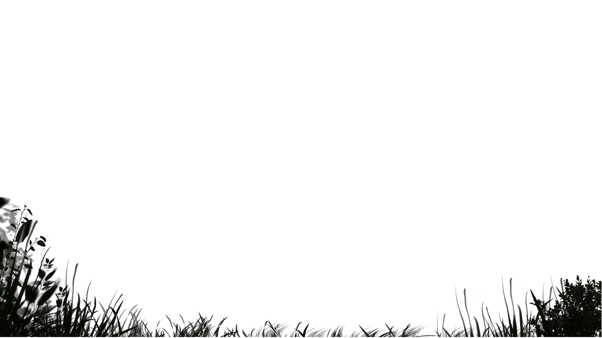
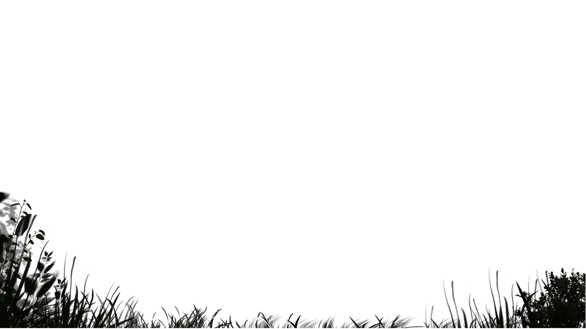
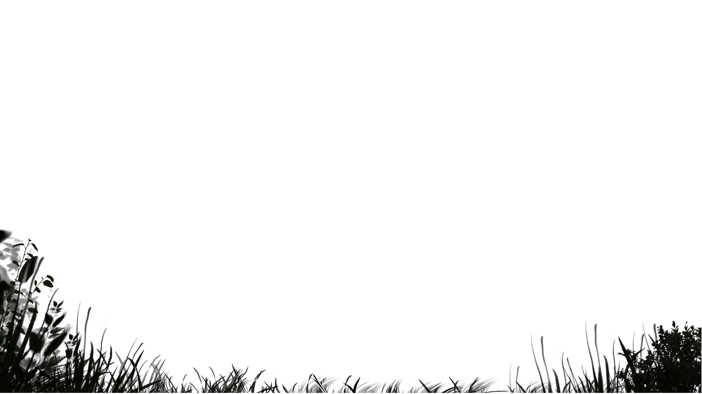
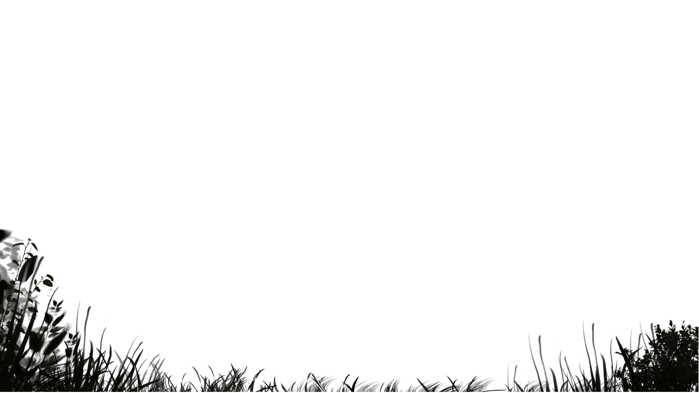

Primal
 



Whats beyond the freakishly tall oak trees and foggy shadows?
a world resurected from the stone age lies ahead, as our explorer
eagerly yet patiently seeks out the strange whispers and whistles that grow
louder with each step.
"SHRIIeeeKKKKkk!!!"
A blur swoops past, taking with it the explorers breath. The leaves
dance and the wind howls at the disturbance of peace this mysterious
creature has created. Nervously, the explorer unzips his bag, quitely retrieving his binoculars.
Trying to spot the creature, he peers into the sky through the lenses that have been fogged up by the misty atmosphere.
Nothing
'But how could it be?' he wondered, 'why with a drmatic entrance like that, the creature ought to be huge, with wings spanning
atleast two trees wide' he calculated while cleaning the lenses with the color of his shirt.
"rattle rattle rattle"
The leaves chittered and chattered as the explorer became more alert. He has been wondering these forest grounds for over 3 hours
looking for something curious and undiscovered.
Then suddenly, everything goes quiet, even the wind seizes to make noise and the explorer realizes he has made a grave, irreversible mistake.
He had unknowingly wondered into the creatures nest, challenging its territory. His heart skips a beat as he struggles to think of a way out.
The creature was undoubtedly watching him behind those leaves, waiting to pounce.
Swiftly, the explorer tucks away his binoculars and walks backwards up the hill, until he steps on a branch, and everything goes BLACK
"SHRRIIIEEEKKK!!"